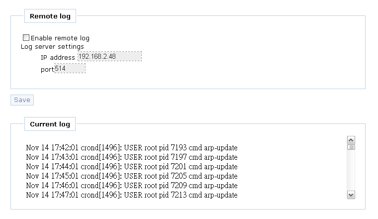
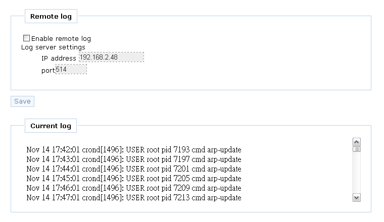

Two fields in this page.
Remote log
- Remote log (check box)
- log server settings
- IP address (text input)
- Port (text input)
Current log
- Inside frame to display current logs
Sample view

System Log
Two fields in this page.

This page shows the system log message. The default log level is "6"(info). The log message can be transfer to remote machine by setting remote log server.